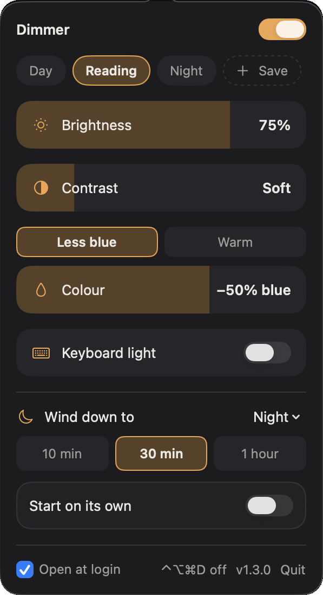
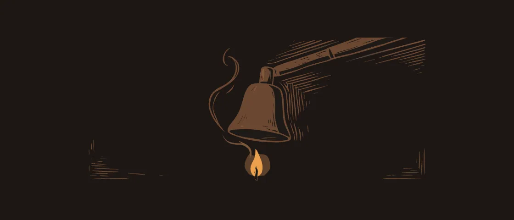

1.2k
What's your night-time screen setup? Mine still feels like a floodlight at 1 a.m.
Your MacBook’s lowest brightness is still too bright at night. Lowbeam dips it lower, keeps text sharp, and turns the keyboard light off.



The screen runs through the same curve the app sends to your display. Pick a preset, move a slider, or wind down from Day to Night.
An ordinary dimmer scales every pixel the same way, so grey text sinks into the background first. Lowbeam dims by light, the way your eye sees it, and drops dark greys faster than text. Move the sliders.

Day, Reading and Night are one tap. Save your own, and each one remembers whether the keyboard light is on.

At sunset or at a time you pick, the screen eases toward a preset over 10 minutes to an hour, so your eyes never notice a step.
Cut the blue channel in clear steps, or warm the whole screen toward candlelight. One slider either way.

The keyboard glow is the brightest thing in a dark room. Switch it off from the same menu, or let a preset do it.
Went too dark to see the menu? Press ⌃ ⌥ ⌘ D from any app. When a change makes text hard to read, Lowbeam shows that shortcut in the brightest white the screen can still give.

Every pixel passes through a few layers before it reaches your eyes. Lowbeam works in the display’s colour table, after all apps have drawn and before the backlight turns the signal into light.